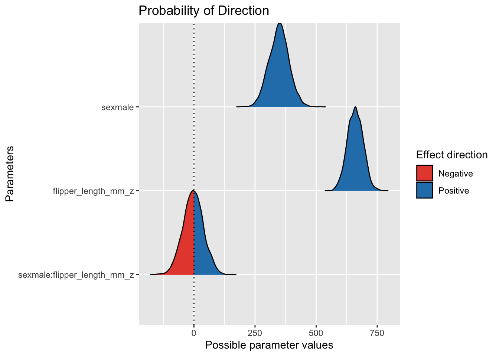
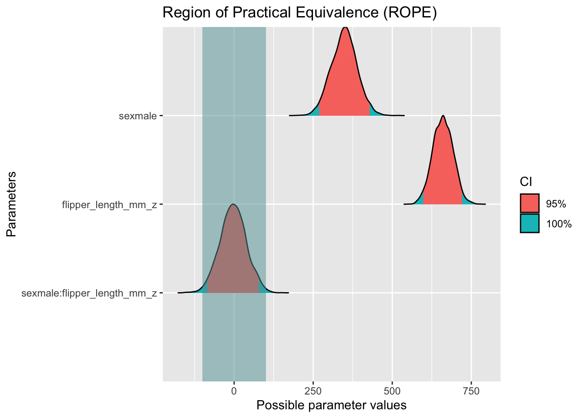

library(tidyverse)
library(easystats)
library(rstanarm)
data("penguins", package = "palmerpenguins")penguins-interact
bayes
regression
paper
qm2
Aufgabe
Eine Forscherin untersucht, ob das Geschlecht eines Pinguins den Einfluss der Flossenlänge (Flipper, mm) auf das Körpergewicht (g) des Tieres moderiert.
Auf Basis der Daten: Liegt ein (substanzieller) Interaktionseffekt vor?
Hinweise:
- Nutzen Sie die folgende Analyse als Grundlage Ihrer Antworten.
- Beachten Sie die Hinweise des Datenwerks.
- Unter “substanziell” sei ein Effekt von mind. 100 g verstanden.
Setup:
Dafür ist folgende Analyse gegeben.
Setup
library(rstanarm)
library(easystats)
library(tidyverse)
library(ggpubr)Modell und Hypothese
Die Forschungsfrage kann man wie folgt als Hypothese formalisieren:
\[\beta_{m} \ne 0\]
“Der Regressionskoeffizient der Moderation (\(m\), d.h. Interaktion) ist ungleich Null.”
Testet man nicht eine exakte, sondern einen Mindestwert (ROPE), so kann man die Hypothese so formulieren:
\[\beta_{m} > 100\]
Die Prioris übernehmen wir vom Stan-Golem.🤖
🤖 Beep, beep!
👩🏫 An die Arbeit, Stan-Golem!
Wir könnten den Datensatz auch als CSV-Datei importieren:
d_path <- "https://vincentarelbundock.github.io/Rdatasets/csv/palmerpenguins/penguins.csv"
penguins <- data_read(d_path) # oder z.B. mit read_csv Ein Blick in die Daten zur Kontrolle, ob das Importieren richtig funktioniert hat:
glimpse(penguins)Rows: 344
Columns: 8
$ species <fct> Adelie, Adelie, Adelie, Adelie, Adelie, Adelie, Adel…
$ island <fct> Torgersen, Torgersen, Torgersen, Torgersen, Torgerse…
$ bill_length_mm <dbl> 39.1, 39.5, 40.3, NA, 36.7, 39.3, 38.9, 39.2, 34.1, …
$ bill_depth_mm <dbl> 18.7, 17.4, 18.0, NA, 19.3, 20.6, 17.8, 19.6, 18.1, …
$ flipper_length_mm <int> 181, 186, 195, NA, 193, 190, 181, 195, 193, 190, 186…
$ body_mass_g <int> 3750, 3800, 3250, NA, 3450, 3650, 3625, 4675, 3475, …
$ sex <fct> male, female, female, NA, female, male, female, male…
$ year <int> 2007, 2007, 2007, 2007, 2007, 2007, 2007, 2007, 2007…Wir entfernen noch alle fehlenden Werte:
penguins_nona <-
penguins |>
filter(sex == "female" | sex == "male")
penguins_nona$sex |> unique()[1] male female
Levels: female maleZur besseren Interpretierbarkeit standardisieren wir die (metrische) UV:
penguins_nona_z <-
penguins_nona |>
standardise(select = "flipper_length_mm",
append = TRUE)m_interaction <- stan_glm(body_mass_g ~ sex + flipper_length_mm_z + sex:flipper_length_mm_z, # Regressionsgleichung
data = penguins_nona_z, # Daten
seed = 42, # Reproduzierbarkeit
refresh = 0) # nicht so viel Outputm_interaction_params <- parameters(m_interaction, ci_method = "hdi", ci = .9)
m_interaction_params| Parameter | Median | CI | CI_low | CI_high | pd | Rhat | ESS | Prior_Distribution | Prior_Location | Prior_Scale |
|---|---|---|---|---|---|---|---|---|---|---|
| (Intercept) | 4031.156606 | 0.9 | 3985.09735 | 4078.37091 | 1.0000 | 1.0002909 | 3191.696 | normal | 4207.057 | 2013.040 |
| sexmale | 348.800992 | 0.9 | 277.55234 | 410.74168 | 1.0000 | 1.0000000 | 3417.024 | normal | 0.000 | 4020.192 |
| flipper_length_mm_z | 660.203105 | 0.9 | 610.01272 | 712.85777 | 1.0000 | 0.9993882 | 2487.696 | normal | 0.000 | 2013.040 |
| sexmale:flipper_length_mm_z | -3.144666 | 0.9 | -70.02727 | 68.50731 | 0.5285 | 0.9994223 | 2651.322 | normal | 0.000 | 2695.055 |
Lösung
Punktschätzer
Der Punktschätzer ist in der Spalte Median in der Tabelle parameters zu finden. Sein Wert ist:
[1] -3.144666Hier ist die Post-Verteilung des Effekts:
m_interaction_params |> plot()
Alternative Visualisierung:
hdi(m_interaction, ci = .9) |> plot()
Breite des Intervalls
Dazu liest man die Intervallgrenzen (90% CI) in der richtigen Zeile ab (Tabelle parameters).
Obere Grenze: 68.5073138.
Untere Grenze: -70.0272668.
Differenz = Obere_Grenze - Untere_Grenze:
[1] 138.5346Einheit: mm
Effektwahrscheinlichkeit
Man erkennt schon im Diagramm zum Konfidenzintervall, dass 100% des Intervalls positiv ist. Daher ist die Effektwahrscheinlichkeit auch positiv.
Man kann diesen Wert aus der Tabelle oben (Ausgabe von parameters()) einfach in der Spalte pd ablesen. pd steht für probability of direction, s. Details hier.
Oder so, ist auch einfach:
pd_m_interaction_params <- p_direction(m_interaction) # aus Paket easystats
pd_m_interaction_params| Parameter | pd | Effects | Component | |
|---|---|---|---|---|
| 1 | (Intercept) | 1.0000 | fixed | conditional |
| 3 | sexmale | 1.0000 | fixed | conditional |
| 2 | flipper_length_mm_z | 1.0000 | fixed | conditional |
| 4 | sexmale:flipper_length_mm_z | 0.5285 | fixed | conditional |
Und plotten ist meist hilfreich: plot(pd_m_interaction_params).
plot(pd_m_interaction_params)
Substanzielle Effektwahrscheinlichkeit
Die Frage ist nichts anderes als nach ROPE zu fragen.
rope_m_interact <- rope(m_interaction, range = c(-100,+100))
rope_m_interact| Parameter | CI | ROPE_low | ROPE_high | ROPE_Percentage | Effects | Component | |
|---|---|---|---|---|---|---|---|
| 1 | (Intercept) | 0.95 | -100 | 100 | 0 | fixed | conditional |
| 3 | sexmale | 0.95 | -100 | 100 | 0 | fixed | conditional |
| 2 | flipper_length_mm_z | 0.95 | -100 | 100 | 0 | fixed | conditional |
| 4 | sexmale:flipper_length_mm_z | 0.95 | -100 | 100 | 1 | fixed | conditional |
plot(rope_m_interact)
Das 95%-Post-Intervall ist komplett innerhalb des ROPE.
Wir können die ROPE-Hypothese daher bestätigen.